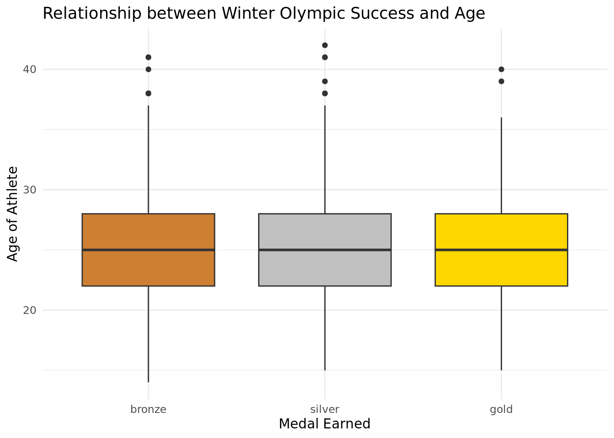

Rows: 2865 Columns: 9
── Column specification ────────────────────────────────────────────────────────
Delimiter: ","
chr (6): Sport, Event, Country, Gender, Medal, Name of Athlete or Team
dbl (3): Year, Medal Rank, Age of Athlete
ℹ Use `spec()` to retrieve the full column specification for this data.
ℹ Specify the column types or set `show_col_types = FALSE` to quiet this message.
Introduction and Data:
The data comes from sports-reference.com. The data was collected five years ago and was scraped from sports-reference.com by Randi Griffin, an Evolutionary Anthropology graduate student of Duke University. Griffin also competed in the 2018 Winter Olympics on the Unified Korea women’s national ice hockey team. This was initially made into a visualization that was then further adapted to the current data set.
The observations represent every athlete who has won a medal at the Winter Olympics. The values in each observation include the year of the Olympics, the type of event the medal was won in, the type of medal won, the country the Olympian was playing for, the gender of the Olympian, and the name of the Olympian. Therefore, the data does include both individual medal winners as well as winning teams, and also includes medalists from countries that no longer exist.
A possible ethical issue with this dataset is that the Olympics page on sports-reference.com has since been removed from the website. Due to low traffic on the Olympics page, less work was done to check over the information and verify that it is all correct, and then sports-reference decided it was better to take down the data set. Because of this, a few of the names of the athletes are slightly misspelled or have extraneous characters, and the page was not updated with results from the 2018 or 2022 Winter Olympics. Despite this, the data was collected ethically, sports-reference is cited as the source of the data, and all of the terms of use listed on the sports-reference website appear to have been followed when the data was taken from sports-reference.com.
Sports-reference.com states that their core purpose is to “democratize data” so that users can better understand the sports that they care about. The site was first launched with Baseball-reference.com in 2000, Pro-Football-Reference.com in 2000, and Basketball-Reference.com in 2004. Sean Forman, the current president of the company that runs Sports-reference.com, Sports Reference LLC, formed Sports Reference, Inc. in October 2004 and the three separate websites aforementioned combined to create Sports Reference LLC in 2007 (About Sports Reference, 2023).
Using this data set, our research question is “What are the factors that influence Winter Olympic success across countries, events and year of event?” A few hypotheses that we have developed are that the colder on average and more populated countries will achieve more wins each year in the Winter Olympics. It is likely that younger athletes will also have more individual success. Also, we predict that across years, Scandinavian countries will have greater success (as measured by gold medals obtained) in Nordic sports over all other sports in the Winter Olympics. (Note to TA: These hypotheses will further develop as we further refine the specific questions that we want to ask).
https://www.sports-reference.com/about.html
Methodology:
Our research topic focuses on analyzing the performance of athletes who have won medals at the Winter Olympics. We plan to answer this research question through trend identification which can be used for predicting outcomes in future Olympics. We plan to gather results from our data by creating visuals comparing factors such as gender, age, Olympic event and more to see which most greatly affected Olympic winter success. These visuals will include histograms, scatter plots, and box plots to answer specific questions (depending on the nature of the variable in question). The variables represented, with the exception of age, are all categorical variables: countries, athletes, events, type of medals, and years.
# A tibble: 3 × 2
category n
<chr> <int>
1 Ice 1312
2 Nordic 933
3 Skiing/Snowboarding 620
Results
Coding Ideas
What is the relationship between age and medals won in individual Winter Olympics events? Demonstrate using a visualization.
WinterOlympic |>mutate(Medal =fct_relevel(Medal, "bronze", "silver", "gold")) |>filter(!is.na(`Age of Athlete`)) |>ggplot(aes(x = Medal, y =`Age of Athlete`)) +geom_boxplot(show.legend =FALSE) +labs(title ="Relationship between Winter Olympic Success and Age",x ="Medal Earned",y ="Age of Athlete")

It appears that there is no relation between medal earned and how old the athlete is. It appears that there are likely other factors that contribute to whether an athlete wins a bronze, silver or gold medal. A box plot was used to show this data since one categorical variable is being compared to one continuous variable.
What is the relationship between age and quantity of medals won in the Winter Olympics? Demonstrate using a visualization.
Process: 1. 2. 3.
Given that a participant was from a Scandinavian country, what is the probability that they won a gold, silver, or bronze medal in a Nordic event, as these originated in Scandinavia?
Scandinavia <- WinterOlympic |>filter(Country =="Norway"| Country =="Sweden"| Country =="Denmark"| Country =="Finland")Scandinavia |>count(category) |>mutate(prob = n /nrow(Scandinavia)) |>filter(category =="Nordic")
# A tibble: 1 × 3
category n prob
<chr> <int> <dbl>
1 Nordic 409 0.644
WinterOlympic |>count(category) |>mutate(prob = n /nrow(WinterOlympic)) |>filter(category =="Nordic")
# A tibble: 1 × 3
category n prob
<chr> <int> <dbl>
1 Nordic 933 0.326
The probability that a medal won by a Scandinavian athlete was in a Nordic event is 0.644.
The probability that any medal won in the Winter Olympics was from a Nordic event is 0.326.